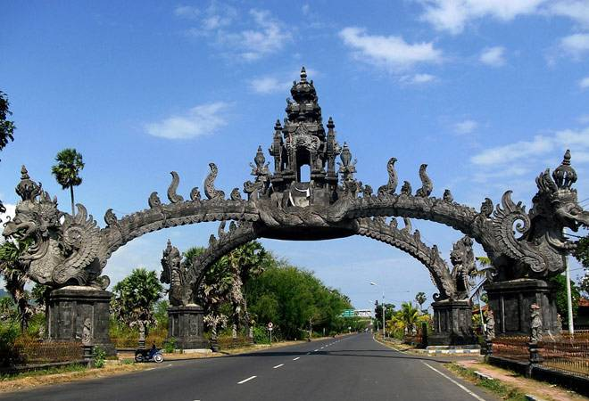

There are few places in the world so deeply connected to and dependent on tourism as Bali, the Hindu-majority Indonesian island and TripAdvisor’s top global destination in 2017. While Bali has been able to keep some of its unique culture alive despite the ever-increasing waves of tourists from around the world, the impact is significant, since the island is only a little over 2,000 miles square. Imagine if almost 7 million people visited Delaware each year.
While parts of Bali remain Balinese, many parts of the island have become something else entirely. The all-night clubs, bars and pizza joints of Kuta, full of drunken Australians and Europeans visiting on cheap budget flights, resemble the Mediterranean nightlife destination of Ibiza. Canggu, a popular surf spot with brunch restaurants, cafes and shops is more akin to the beaches of Southern California or Australia’s Byron Bay. And Ubud, famous for its yoga studios, meditation centers and therapeutic massage parlors, has a similar vibe to Rishikesh or Dharamshala in India. What’s more, the exquisite resorts of Nusa Dua, with their own private golf courses and manicured beaches, echo the French Riviera or Cancun.
Bali, then, has merely become the backdrop for whatever visitors want it to be —whether it be spirituality, parties, or honeymoons. Tourism has changed the island to the point that more and more Balinese are starting to question whether it has all been worth it.
Famous for its volcanic mountains, iconic beaches and coral reefs, Indonesia's resort island of Bali has topped TripAdvisor's best destination list.
Go to this website for your booking : Book now